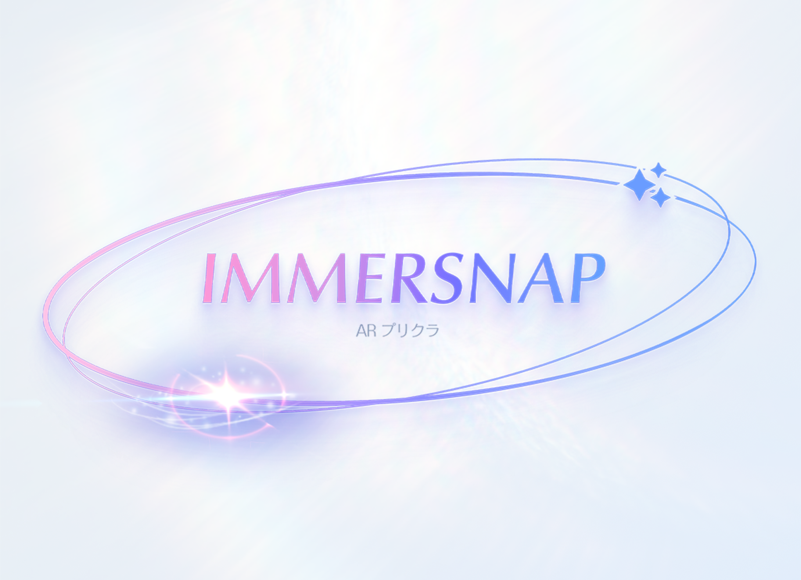
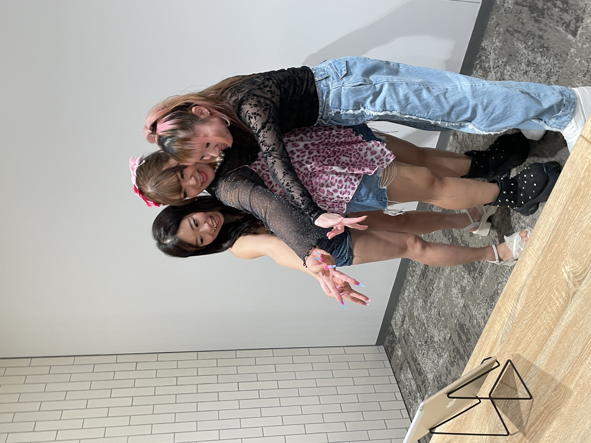
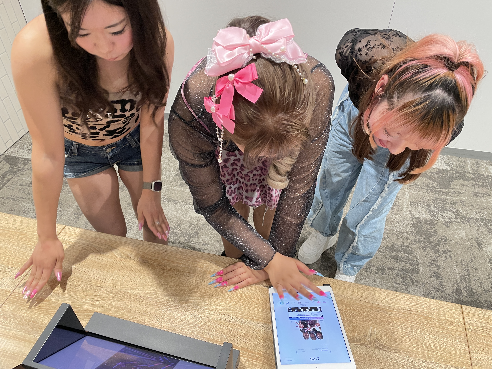
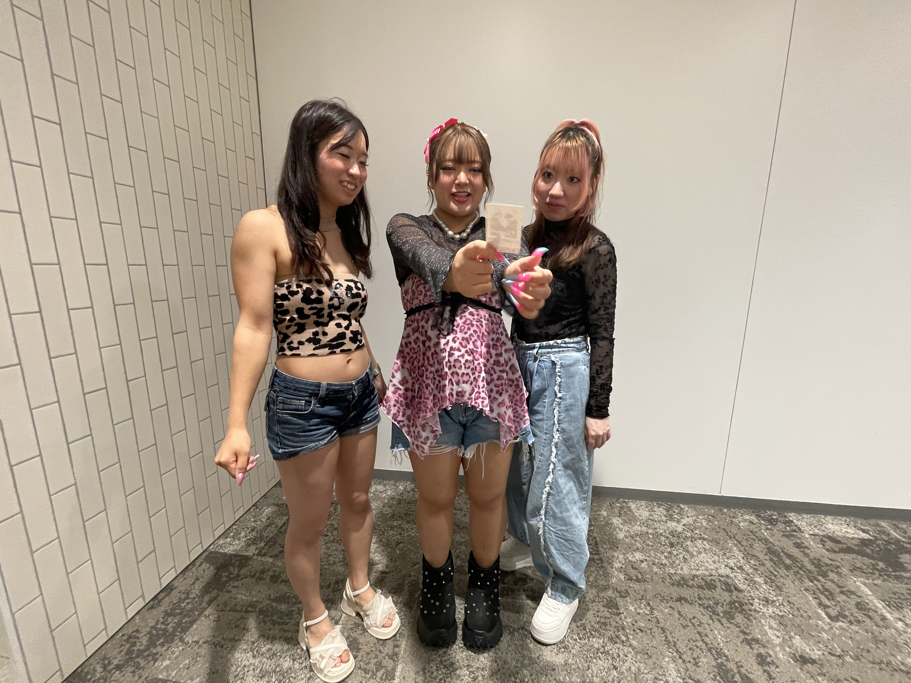

IMMERSNAP
AR Purikura
Concept
静的な写真を、関係性の変化を映し出す「動的な記憶メディア」へ変革するタンジブルWebAR
Transforming static photo stickers into dynamic, evolving memories through Semantic-Driven AI and Tangible WebAR.
Overview
IMMERSNAPは、日本の「プリクラ」文化に着想を得た、新しい記憶の振り返り体験を提案するタンジブルWebARシステムです。
従来の写真は撮影した瞬間の「点」しか記録できませんが、本システムはマルチモーダルAIを活用し、写真の表情やユーザーの手描きデコレーションからその場の文脈（雰囲気や感情）を抽出します。
さらに、スマートフォン越しに複数枚の写真を同時にスキャンすることで、時間経過に伴う関係性の変化をクロス解析。AR空間上に過去と現在を繋ぐ「タイムラインリボン」や、AIが生成した状況に応じた動的なエフェクトを出現させます。分断されていた思い出を連続的な「線（軌跡）」へと昇華させ、対人記憶をより豊かで没入感のある体験へと拡張します。
IMMERSNAP is a tangible WebAR system inspired by Japanese "Purikura" (photo sticker) culture,
designed to redefine the memory recall experience.
While conventional photography captures isolated moments as static "points" in time, IMMERSNAP
leverages multimodal AI to extract situational context—such as facial expressions and hand-drawn
decorations—directly from physical photo stickers.
By simultaneously scanning multiple photos with a smartphone, the system cross-analyzes semantic differences over time. It then generates dynamic AR visual effects, including an adaptive timeline ribbon that visually bridges the physical artifacts. This approach seamlessly transforms disconnected memories into a continuous "trajectory" of evolving relationships, delivering a richer and more immersive interpersonal memory experience.
Demo Video



